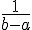
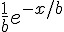
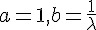

抽樣
抽樣的理論
統計的基礎是抽樣，所謂的抽樣就是從母體 (一大群樣本) 當中抽出一些樣本，而在抽樣的時候，我們通常會盡可能的確保樣本的隨機性，以避免抽到的樣本有所偏差。
簡單來說，抽樣是從一群東西(母體) 當中隨機抽取出 x1, x2, ...., xn 等 n 個觀察值的過程，表示如下：
母體 => (獨立性) X1, X2, .... , Xn 等 n 個隨機變數相互獨立 => 取出 x1, x2, ...., xn 等 n 個觀察值。在電腦上進行抽樣統計非常的容易，只要連續呼叫抽樣函數即可。但是在真實世界當中 (例如作問卷調查等等)，要讓抽樣具備隨機性，就沒有這麼簡單了。
抽樣的實務
真實的抽樣上主要的困難是不容易達到獨立性的問題，舉例而言，假如您想要調查台灣人的每日刷牙次數統計，那麼如果真的要進行隨機抽樣，那麼就需要先有一份全台灣人的資料庫 (例如：身份證字號庫)，然後透過電腦或像樂透開獎一樣亂數選取過程，隨機取出 n 個樣本，接著您要真的去對這些人進行問卷調查，而且每個人都要問到，不可以有遺漏，這件事情光是想像就夠困難的了，更何況是真的去做。
但是如果您無法這樣做，可能就會便宜行事，例如隨機打電話進行訪問，但這樣的抽樣就會有所偏差，因為你抽不到那些沒有電話的人，而那些常常忙碌無法回答的人也通常不會被調查到。甚至有些抽樣者會到街上直接訪談，那這樣就沒有辦法訪問到不上街的人，也訪問不到其他區域的人，於是「隨機抽樣」就有了很大的偏差。
R 軟體實作：sample 抽樣函數
在電腦上，我們可以很容易的模擬隨機抽樣，R 軟體中最簡單的抽樣函數是 sample，sample 函數的原型是 sample(x, size, replace = FALSE, prob = NULL)，如果 replace=T 代表抽完放回，否則代表抽完不放回 (不會重複出現)。
R 操作範例：簡易的 sample 抽樣
> x = sample(1:100, 10)
> x
[1] 12 17 50 33 98 77 39 79 7 26
> sample(1:5)
[1] 5 1 2 4 3
> sample(1:5, size=1)
[1] 4
> sample(1:5, size=3)
[1] 5 2 1
> sample(1:5, size=10, replace=T)
[1] 3 5 2 2 5 3 5 4 4 2
> sample(1:5, size=10)
錯誤在sample(1:5, size = 10) :
cannot take a sample larger than the population when 'replace = FALSE'
> sample(1:5, size=10, prob=c(0.5,0.1,0.2,0.1,0.1))
錯誤在sample(1:5, size = 10, prob = c(0.5, 0.1, 0.2, 0.1, 0.1)) :
cannot take a sample larger than the population when 'replace = FALSE'
> sample(1:5, size=10, prob=c(0.5,0.1,0.2,0.1,0.1), replace=T)
[1] 3 1 3 3 1 1 2 1 3 1
> sample(1:5, size=10, prob=c(0.5,0.1,0.2,0.1,0.1), replace=T)
[1] 1 1 1 5 5 5 1 1 4 1
> sample(1:5, size=10, prob=c(0.5,0.1,0.2,0.1,0.1), replace=T)
[1] 2 4 1 5 1 2 1 1 2 3
> R 操作範例：模擬擲銅板
> sample(1:6, 10, replace=T)
[1] 4 4 2 4 5 6 1 1 1 3
> sample(1:52, 13)
[1] 29 6 4 40 33 43 52 48 37 21 3 34 26
> sample(c("H", "T"), 10, replace=T)
[1] "T" "H" "H" "T" "T" "T" "T" "T" "T" "H"
> sample(c("Up", "Down"), 10, replace=T, prob=c(0.7, 0.3))
[1] "Up" "Up" "Up" "Down" "Up" "Up" "Up" "Up" "Up"
[10] "Up"
> sample(c("成功", "失敗"), 10, replace=T, prob=c(0.1, 0.9))
[1] "失敗" "失敗" "失敗" "失敗" "失敗" "失敗" "失敗" "失敗" "失敗"
[10] "失敗"
> sample(c("成功", "失敗"), 10, replace=T, prob=c(0.1, 0.9))
[1] "失敗" "失敗" "失敗" "失敗" "失敗" "失敗" "成功" "失敗" "失敗"
[10] "失敗"
> R 操作範例：模擬擲骰子
> sample(1:6, 1)
[1] 2
> sample(1:6, 5)
[1] 4 1 3 2 5
> sample(1:6, 10)
錯誤在sample(1:6, 10) :
cannot take a sample larger than the population when 'replace = FALSE'
> sample(1:6, 10, replace=T)
[1] 4 3 2 4 1 6 4 2 5 1
>
> sample(1:6, 10, replace=T)
[1] 4 3 2 4 1 6 4 2 5 1
> x <- sample(1:6, 10, replace=T)
> x
[1] 1 2 5 2 4 1 4 4 6 5
> x=2
> x
[1] 2
> x <- sample(1:6, 10, replace=T)
> x
[1] 2 4 2 2 5 4 4 5 3 2
> sum(x=2)
[1] 2
> x <- sample(1:6, 10, replace=T)
> x
[1] 4 1 6 2 1 3 5 5 3 6
> x==2
[1] FALSE FALSE FALSE TRUE FALSE FALSE FALSE FALSE FALSE FALSE
> sum(x==2)
[1] 1
> sum(x==6)
[1] 2
> R 操作範例：統計抽樣結果
> x <- sample(6,6000,replace=T)
> for (i in 1:6) print(sum(x==i))
[1] 996
[1] 1047
[1] 1043
[1] 985
[1] 961
[1] 968R 軟體實作：機率分布的抽樣
對於常用的機率模型而言，都有對應的 R 抽樣函數，以下是一些最常用的機率模型之整理。
| 機率模型 | 密度函數 | R 函數名稱 | 說明 |
|---|---|---|---|
| 二項分布 |  |
binom(n:size, p:prob) | n:樣本數, p:正面機率, n 次試驗中有 x 個成功的機率 |
| 負二項分布 |  |
nbinom(size, prob) | x:樣本數, , p:正面機率, 要得到第 r 次成功所需要的試驗次數 |
| 布瓦松分布 |  |
pois(lambda) | k:期望值,  , , 在 s 時間內，事件出現平均 k 次 |
| 均勻分布 (Uniform) |  | unif(a:min, b:max) | a:範圍下限, b: 上限 出現機會均等 |
| 常態分布(Normal) |  |
norm(mean, sd) | 中央極限定理：x1+x2+...+xk; 當 k 越大就越接近常態分布 |
| 指數分布 (Exponential) |  | exp(rate) | 伽瑪分布(  ) 布瓦松過程中，第一次事件出現的時間 W |
對於每個機率模型，您只要在該函數前若加入 r 這個字，就可以用來產生隨機樣本，以下是一些隨機樣本的產生範例。
> rbinom(20, 5, 0.5)
[1] 4 3 3 4 2 4 3 1 2 3 4 3 2 2 2 4 2 3 1 1
> rpois(20, 3.5)
[1] 2 1 4 2 1 6 3 6 1 3 3 6 6 0 4 2 6 4 6 2
> runif(20, min = 3, max = 8)
[1] 3.933526 3.201883 7.592147 5.207603 4.897806 3.848298 4.521461 4.437873
[9] 3.655640 5.633540 6.557995 5.430671 6.502675 5.637283 7.713699 5.841052
[17] 6.859493 5.987991 3.752924 7.480678
> rnorm(20, mean = 5.0, sd = 2.0)
[1] 6.150209 4.743013 3.328734 5.096294 4.922795 6.272768 4.862825 8.036376
[9] 4.198432 5.467984 2.046450 6.452511 2.088256 5.349187 3.074408 3.628072
[17] 3.421388 7.242598 3.125895 9.865341
> rexp(20, rate=2.0)
[1] 0.17667426 0.49729383 0.12786107 0.13983412 0.44683515 1.30482842
[7] 0.28512544 1.61472266 0.23220649 0.39089780 0.05947224 1.42892610
[13] 0.02555552 0.69409186 0.68228242 0.22542362 0.33590791 0.14684937
[19] 0.34995146 0.80595369為了讓讀者能確認這些指令所產生的圖形確實符合分布，讓我們用這些隨機抽樣函數各產生 100,000 個樣本， 然後用 hist() 這個函數繪製統計圖，就能看出這些抽樣函數的效果了，以下是我們的抽樣指令與結果圖形。
二項分布
> x = rbinom(100000, 5, 0.5)
> hist(x)
rbinom(100000, 5, 0.5) 的統計圖
布瓦松分布
> y = rpois(100000, 3.5)
> hist(y)
rpois(100000, 3.5) 的統計圖
均勻分布
> z = runif(100000, min=3, max=8)
> hist(z)
runif(100000, min=3, max=8) 的統計圖
常態分布
> w = rnorm(100000, mean=5.0, sd=2.0)
> hist(w)
rnorm(100000, mean=5.0, sd=2.0) 的統計圖
指數分布
> v = rexp(100000, rate=2.0)
> hist(v)
rexp(100000, rate=2.0) 的統計圖